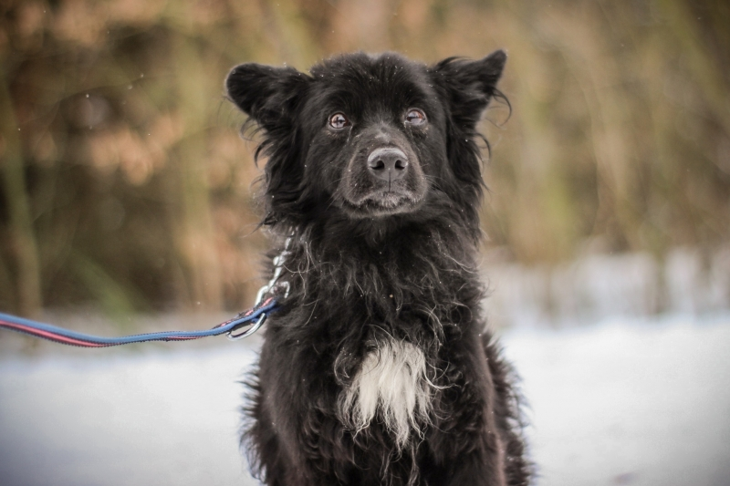

Ariko
Ariko to psiak, który musiał sporo przejść w życiu; do schroniska trafił zaniedbany i wycofany. Nie umiał chodzić na smyczy, nie wiedział, że człowiek może chcieć dla niego dobrze. Jednak bardzo szybko się wszystkiego uczy. Teraz bardzo czeka na swoją kolej na spacer i na kontakt z człowiekiem. Pięknie spaceruje na smyczy, powolutku drepcząc przy człowieku. Jest łasy na smaczki i lubi głaskanie po główce czy szyi. Ariko bardzo lubi inne psiaki i świetnie się z nimi dogaduje. Ariko nadal boi się przy zapinaniu i odpinaniu obroży, nie wie do końca czego się spodziewać, straszy wtedy zębami. Przyszła rodzina musi to z nim ćwiczyć, trzeba też będzie dać mu czas na oswojenie się z nowym miejscem. Po tym jak szybko zmienia się w schronisku wiemy, że kiedy już komuś w pełni zaufa będzie naprawdę wiernym członkiem rodziny. Wykluczamy dom z dziećmi, do Ariko trzeba podchodzić spokojnie i z wyczuciem, szanować jego początkowe granice świeżo po adopcji. Jeśli masz doświadczenie z psami i dużo cierpliwości Ariko czeka właśnie na Ciebie.